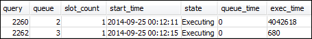
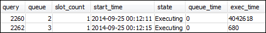

Sección 4: Utilización de wlm_query_slot_count para anular de forma temporal el nivel de simultaneidad en una cola
En ocasiones, los usuarios pueden necesitar de forma temporal más recursos para una consulta en particular. De ser así, pueden utilizar la opción de configuración wlm_query_slot_count para anular temporalmente la forma en la que se asignan los slots en una cola de consultas. Los slots son unidades de memoria y CPU que se utilizan para procesar consultas. Puede anular el número de slots cuando tiene consultas ocasionales que consumen una gran cantidad de recursos del clúster, como cuando realiza una operación VACUUM en la base de datos.
Es posible que se encuentre con que los usuarios necesitan con frecuencia establecer para determinados tipos de consulta. Si es así, plantéese ajustar la configuración de WLM y proporcionar a los usuarios una cola que se adapte mejor a las necesidades de sus consultas. Para obtener más información acerca de la anulación temporal del nivel de simultaneidad utilizando el número de slots, consulte wlm_query_slot_count.
Paso 1: Anulación del nivel de simultaneidad mediante wlm_query_slot_count
Para los fines de este tutorial, ejecutamos la misma consulta de ejecución prolongada SELECT. La ejecutamos como el usuario adminwlm con wlm_query_slot_count para aumentar el número de slots disponibles para la consulta.
Para anular el nivel de simultaneidad mediante wlm_query_slot_count
-
Aumente el límite en la consulta para asegurarse de que dispone del tiempo suficiente para consultar la vista WLM_QUERY_STATE_VW y ver un resultado.
set wlm_query_slot_count to 3; select avg(l.priceperticket*s.qtysold) from listing l, sales s where l.listid <40000; -
Ahora, la consulta WLM_QUERY_STATE_VW utiliza el usuario administrador para ver cómo se ejecuta la consulta.
select * from wlm_query_state_vw;A continuación se muestra un resultado de ejemplo.

Observe que el número de slots para la consulta es 3. Este número significa que la consulta está utilizando los tres slots para procesarse, lo que lleva a la asignación de todos los recursos de la cola a esa consulta.
-
Ahora, ejecute la siguiente consulta.
select * from WLM_QUEUE_STATE_VW;A continuación se muestra un resultado de ejemplo.

La opción de configuración wlm_query_slot_count es válida solo para la sesión actual. Si esa sesión expira u otro usuario ejecuta una consulta, se utiliza la configuración de WLM.
-
Restablezca el número de slots y vuelva a ejecutar la prueba.
reset wlm_query_slot_count; select avg(l.priceperticket*s.qtysold) from listing l, sales s where l.listid <40000;A continuación se incluyen resultados de ejemplo.
 

Paso 2: Ejecución de consultas de sesiones diferentes
A continuación, ejecute consultas de sesiones diferentes.
Para ejecutar consultas de sesiones diferentes
-
En las ventanas RSQL 1 y 2, ejecute lo siguiente para utilizar el grupo de consultas de prueba.
set query_group to test; -
En la ventana RSQL 1, ejecute la siguiente consulta de ejecución prolongada.
select avg(l.priceperticket*s.qtysold) from listing l, sales s where l.listid <40000; -
Mientras se ejecuta la consulta de ejecución prolongada en la ventana RSQL 1, ejecute lo siguiente. Estos comandos aumentan el recuento de slots para usar todos los slots para la cola y empezar a ejecutar la consulta de ejecución prolongada a continuación.
set wlm_query_slot_count to 2; select avg(l.priceperticket*s.qtysold) from listing l, sales s where l.listid <40000; -
Abra una tercera ventana RSQL y consulte las vistas para ver los resultados.
select * from wlm_queue_state_vw; select * from wlm_query_state_vw;A continuación se incluyen resultados de ejemplo.


Observe que la primera consulta utiliza uno de los slots asignados a la cola 1 para ejecutar la consulta. Observe, además, que hay un consulta esperando en la cola (donde
queuedes1ystateesQueuedWaiting). Una vez que se completa la primera consulta, la segunda comienza a ejecutarse. Esta ejecución ocurre porque ambas consultas se dirigen al grupo de consultastesty la segunda consulta debe esperar por la cantidad de slots suficientes para comenzar a procesarse.